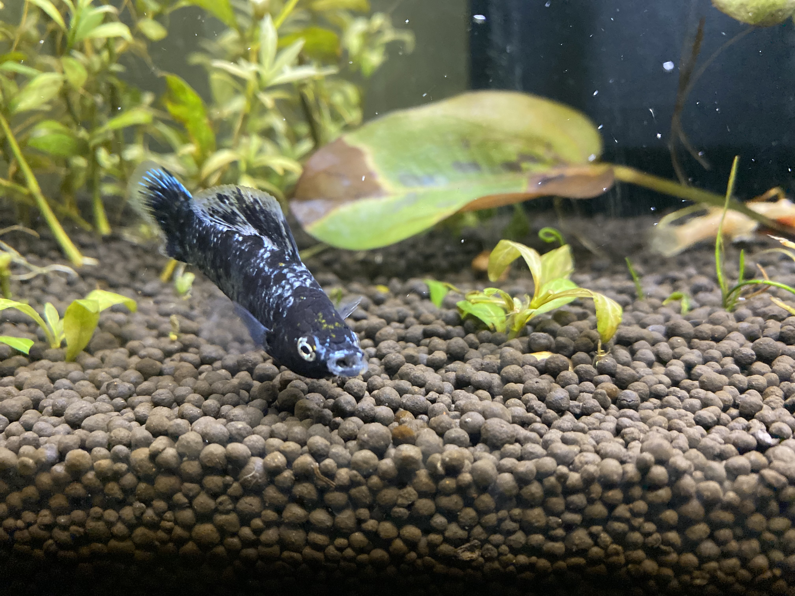
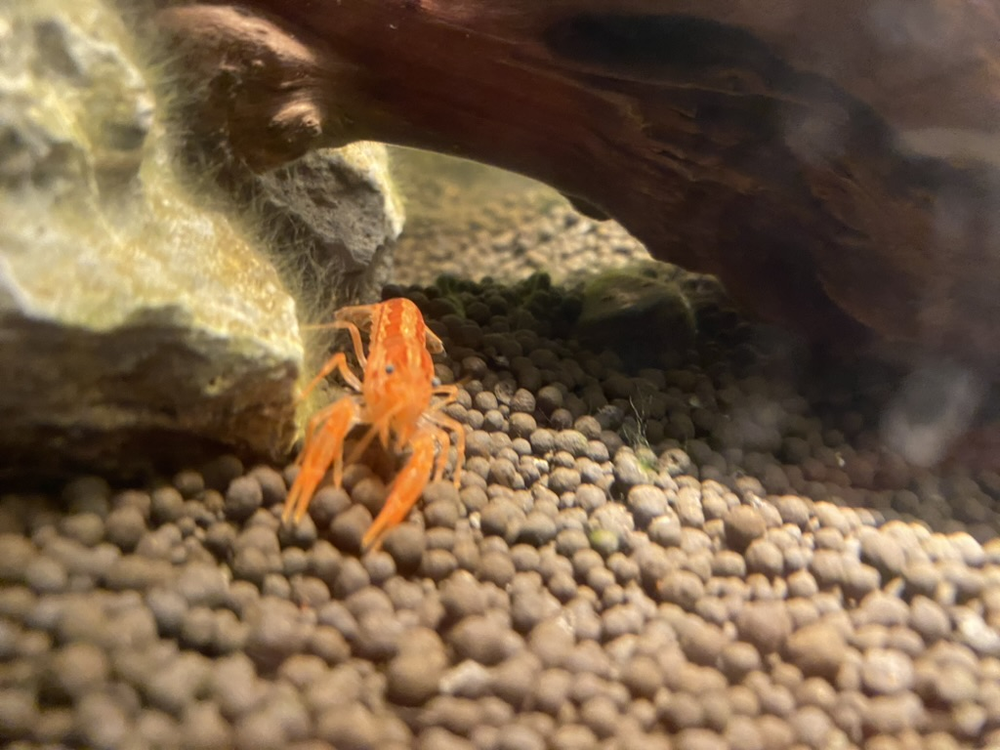

Bienvenue sur la page des passions !
Bienvenue sur ma page qui présente mes passions. Ici vous pourrez découvrir autour de quoi mon centre
d'intérêt tourne.
Je vous souhaite une bonne lecture!
Passion n°1: L'aquariophilie
Après avoir fini mon lycée j'ai décidé de me lancer dans l'aquariophilie et d'acheter un aquarium et des poissons. J'ai donc acheter un aquarium d'environ 60L et je l'ai préparer pendant environ 1 mois et demis afin de pouvoir y introduire des poissons. Depuis ce jour je m'occupe de mes petits colocataires dans ma chambre avec soin. Ce sont en queqlue sorte mes chouchous. Depuis que j'ai un aquarium j'ai découvert beaucoups d'espèces toute aussi intérressante les unes que les autres. J'en profite donc pour introduire dans mon aquarium de nouvelle espèce de temps à autres. (dernière ce sont des crevettes bloody marie [x2]). Puis un jour je suis tomber amoureux d'un race d'écrevisse en allant chez le vendeur d'animal de compagnie. Il s'aggissait d'une Ecrevisse CPO. C'était une petite Ecrevisse naine mexicaine. J'ai donc pendant 2 long mois préparer un aquarium d'environ 20 litres pour l'acceuillir et aujourd'hui je suis content d'avoir à côte de moi quand je travail, Tequila:
 Passion n°2: L'informatique
Je souhaitais faire de l'informatique depuis longtemps, je dirais environ la seconde. On m'a donc
conseiller de m'orienté vers un bac STI2D pour faire de l'informatique. Durant ma première et ma
terminal j'ai developper en C (sur arduino) ainsi qu'un peu en html et en css. C'était là que j'ai fais
mes débuts en informatique et à partir de là j'étais sûr de moi que je voulais vraiment faire de
l'informatique. Je me suis donc diriger vers l'IUT de Lannion qui offrait une formation dans
l'informatique en bac +3 et tout ça non loin de chez moi. et aujourd'hui encore je poursuis mon envie de
travailler dans l'informatique et plus spécificquement dans le developpement logiciel/web.
Vous pourrez donc si vous le voulez voir mon avancement en informatique dans mes compétences où j'expose les projets que j'ai pu réaliser.
Cliquer sur l'image pour y avoir accès
Passion n°3: Le gaming
Je suis un grand amateur de jeux vidéos. J'ai commencé à jouer à des jeux vidéos très tôt grâce à mon père. Je le regardais souvent jouer quand j'étais petit donc les jeux vidéos m'ont tout de suite plus, que ce soit à moi ou à mon frére ! J'ai commencé avec Pokemon heart gold et je continue encore à jouer aujourd'hui comme beaucouo d'autre gens.
Je vous présente ici une lise des jeux que j'aime jouer en ce moment:
- Monster Hunter World
- Valorant
- Albion Online
- For Honor
- Smash Bros